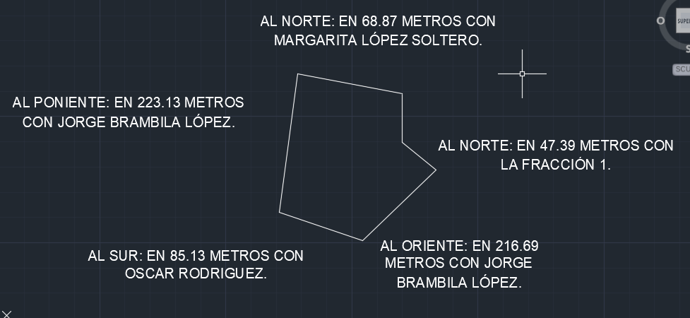

TU ASISTENTE DE COLINDANCIAS
Del plano al texto.
Así de claro.
Sube una imagen, revisa cada viento y obtén
la descripción lista para tu documento.
01 Carga tu imagen02 Revisa los tramos03 Copia el resultadoSin registros. Sin complicaciones.
01
EJEMPLOTu documento

VISTA DE EJEMPLOTambién puedes pegar texto obtenido de un PDF o una escritura.
La lectura es local. Tu imagen no se envía a un servidor.
Funciona con texto legible en planos, capturas y documentos. Reconoce vientos cardinales y diagonales en cualquier posición.
02
4 vientosTus colindantes
Resultado de ejemplo. Sube tu imagen para obtener tus colindantes.
Formato del texto
Compara con tu imagen. Corrige los datos y marca cada tramo como revisado.
0 de 5 revisados
Texto que necesita revisión
Ver texto detectado
Varios tramos, una descripción
Respeta los vientos escritos y su orden de aparición.
El formato lo eliges tú
Mayúsculas, minúsculas o formato habitual.
La última revisión es tuya
Comprueba las medidas y los nombres originales.